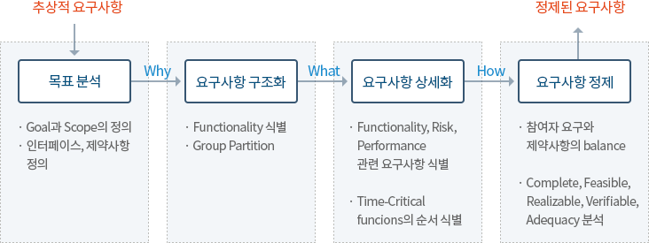

1. 요구사항분석
- 수집된 요구사항으로부터 완전성, 일관성을 가진 동의된 요구사항 집합으로 구축하는 활동
- 고객의 요구들에 대해 How 보다는 What에 초점을 맞춤 (기능, 성능, 인터페이스 등을 정의)
- 아직 정제되지 않은 절차적 단계로서 상세한 명세보다는 이해관계자들의 요구만족에 초점 (올바른 요구사항인가?)
2. 요구사항 분석 절차
-
기능 요구사항 분석
솔루션이 가져야 할 기능적 요건을 분석한다
- 솔루션 구조분석 및 기능 분류체계 작성
- 기능 요구사항 분석
※ 추상적이고 모호한 요구사항에 대한 상세화 작업을 위해 필요 시 모델링 기법을 활용한다
-
비기능 요구사항 분석
솔루션이 가져야 할 비 기능적 요건을 분석한다
- 솔루션이 가져야 할 비 기능적 요건을 분석한다
- 성능(Performance), 신뢰성(Reliability), 사용성(Usability), 보안성(Security), 유지관리성(Maintainability), 이식성(Portability), 가용성(Availability) 등
- 기타 요구사항 분석
- 시스템 장비, 인터페이스, 데이터, 테스트, 제약사항
- 요구사항 우선순위화
- 우선순위를 정할 때 아래의 사항을 고려하여 우선순위를 선정한다
- 기술적 위험도
- 기능적 중요성 (이해관계자 우선순위 고려)
- 개발의 반복주기를 반영(릴리즈 주기)고려하여 순위를 매긴다.
- 우선순위를 정할 때 아래의 사항을 고려하여 우선순위를 선정한다
※ 추상적이고 모호한 요구사항에 대한 상세화 작업을 위해 필요 시 모델링 기법을 활용한다
- 솔루션이 가져야 할 비 기능적 요건을 분석한다
3. 요구사항 구조화 및 상세화

문제의 이해와 분석
- 고객과 개발자 사이의 Communication
- 이해관계자 별 요구의 명확한 이해 및 확인을 위해 가시화하고 최적화함
- 자연어 및 다이어그램 활용 : 텍스트 요구사항 문서에 우선
요구사항의 상세화
- 완전성 보완
- Confirm Elicitation
- 모델의 완전성= 도출의 완전성
- 일관성 확보
- Uncover Problems
- 모델 불일치 = 누락, 충돌, 불일치, 모호성
- 테스트 가능성 고려
- Check Understanding
- 기대 속성의 보유 여부, 결론예측, 요구사항 검증
적절한 모델링 기법의 사용
구조적 모델링 기법 vs 객체지향 모델링 기법 vs Use-Case 모델링 기법
요구사항 정제
- 요구사항이 너무 일반적일 때: 모호성 발생
- 참여자간에 우선순위에 대해 다른 의견
- 참여자간 Effort에 대한 서로 다른 의견
4. 요구사항 우선순위화
우선순위 부여 목적
- 고객 기대는 높고, 개발기간은 짧고, 인적자원은 한정되어 있다
- 이해관계자들은 다양한 요인들과 연결됨
요구사항 우선순위 기준
- 기술적 위험도 (구현시 얼마나 기술적으로 위험한가?)
- 기능적 중요성 (이해관계자 우선순위 고려)
우선순위 선정 시 고려사항
- 우선순위는 고객 스스로 정하도록 유도하는 것이 바람직
- 데시벨 우선순위 : 목소리 큰사람에 의한 우선순위 선정은 피해야 함
5. 분석 기법 및 선정 기준
분석 기법
| 구분 | 구조적 모델링 | 객체 지향 모델링 |
|---|---|---|
| 정의 |
|
|
| 특징 |
|
|
선정 기준
기법 선정 시 아래 사항을 고려한다
- 문제의 본질 (분석을 통해 확인/해결하고자 하는 문제는 무엇인가?)
- 개발자가 익숙한 모델링기법 (생산성을 높임)
- 고객 요구사항 (고객이 자기들이 이해하기 쉬운 기법으로 분석하도록 요구할 경우)
| 분류 | 기법 | 적용 상황 |
|---|---|---|
| 객체지향분석 |
UML (Unified Modeling Language, 통합모델링언어) |
|
|
||
|